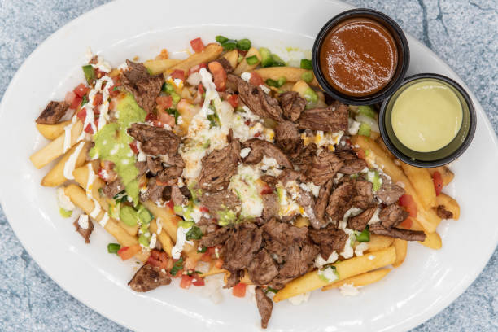

CARNE ASADA WITH FRENCH FRIES
<-- Return

French fries topped with my favorite street taco and smothered in queso. Loaded fries don't get much better than this. Don't forget your favorite hot sauce.
Ingredients
- 1 pound beef skirt steak, thinly sliced
- 1 (12 fluid ounce) can or bottle lager beer (such as Corona®)
- ½ (1.41 ounce) package sazon seasoning with coriander and annatto (such as Goya®)
- 1 (26 ounce) package frozen French fries
- 1 cup queso blanco sauce
- ¼ cup diced onion
- ¼ cup chopped cilantro
Steps
- Place steak, beer, and sazon seasoning in a gallon-sized resealable bag. Refrigerate for 8 hours, or overnight.
- Preheat the oven to 450 degrees F (230 degrees C). Spread French fries evenly on a baking sheet.
- Preheat an outdoor grill for medium-high heat and lightly oil the grate. Cook steak for 5 minutes, flipping halfway through. Transfer to a plate and let rest for 10 minutes.
- Bake fries in the preheated oven until light golden in color, 11 to 15 minutes. Divide among 4 serving plates and drizzle queso over the top.
- Slice steak across the grain into bite-sized pieces and scatter over the fries. Garnish with onion and cilantro.